Poder & Sociedad

Poder & Sociedad
La gira papal en Sudamérica expone las grietas de la salud pública regional
La llegada del Papa León XIV a Perú y Argentina coincide con un alarmante rebrote de sarampión. El contraste entre la movilización masiva y la caída en la cobertura de vacunación revela el costo social de la austeridad estatal.
Más de Poder & Sociedad
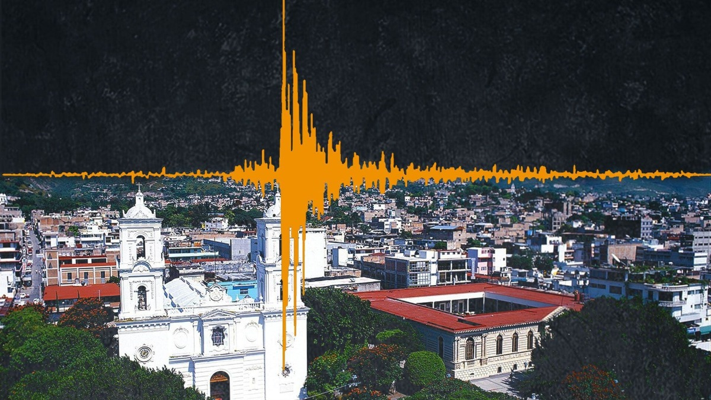
Poder & SociedadSismo de magnitud 4.1 en Chiapas expone la vulnerabilidad infraestructural de la frontera sur
El Servicio Sismológico Nacional reportó un temblor de profundidad superficial a 137 kilómetros de Ciudad Hidalgo. El evento pone de manifiesto los retos de resiliencia operativa en un nodo logístico transfronterizo.
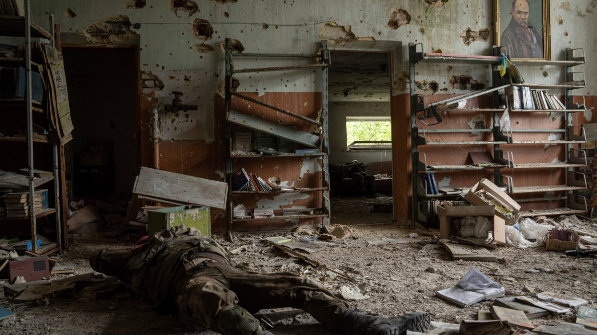
Poder & SociedadUna filtración oficial expone más de 450.000 combatientes rusos muertos en la guerra
Dos grupos de hackers publicaron los datos de la agencia gubernamental de estadísticas. Los registros confirman la muerte de ciudadanos extranjeros, incluidos latinoamericanos y un español.
Tiroteo en Washington DC deja cinco baleados y reabre el debate sobre seguridad
Un ataque armado en un vecindario concurrido de la capital estadounidense concluyó con la muerte de una víctima y el suicidio del agresor. El hecho reaviva la discusión sobre el control territorial y la eficacia policial en el distrito federal.
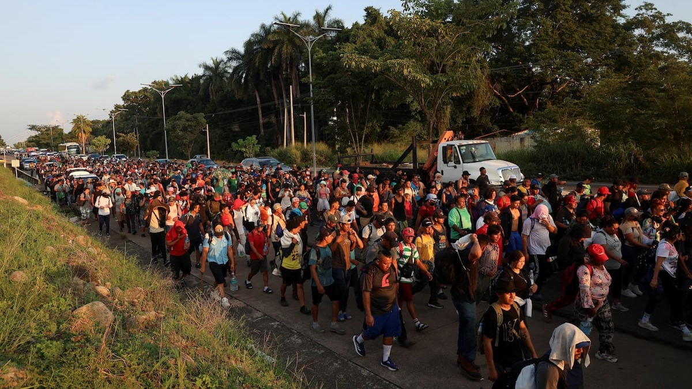
Poder & SociedadLa estrategia de la amenaza: el uso de México ante la parálisis republicana
El presidente Trump busca reactivar su agenda mediante la presión arancelaria sobre México. La medida responde más a la pérdida de poder en el Congreso que a una nueva realidad migratoria.
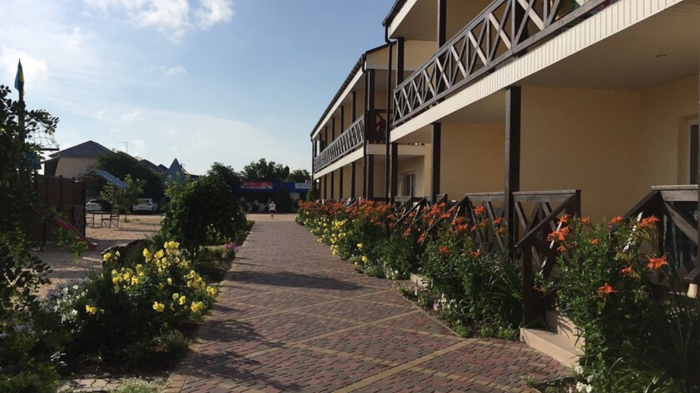
Poder & SociedadLa justicia ucraniana fija en 5,1 millones de dólares la factura judicial por la expropiación del hotel Admiral
Un fallo judicial contabiliza al detalle la confiscación de un complejo turístico a orillas del mar de Azov. La sentencia expone el mecanismo de ocupación patrimonial que afecta a más de 7.000 inmuebles en Zaporiyia.
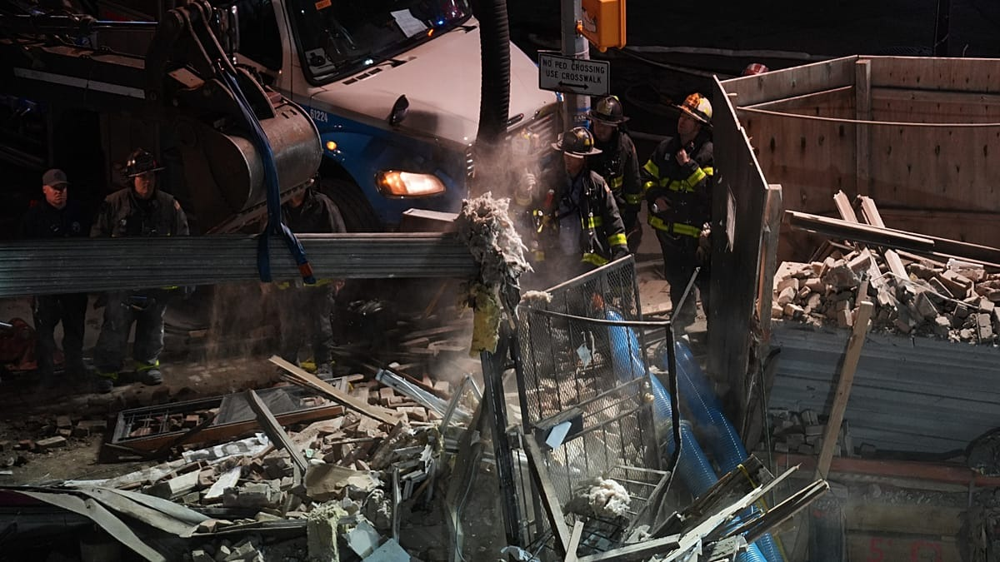
VIDEOPoder & SociedadDerrumbe en Brooklyn saca a la luz las fallas en la supervisión inmobiliaria
Un colapso estructural durante obras adyacentes dejó al menos dos fallecidos en Nueva York. Las investigaciones reabren el debate sobre la regulación de licencias urbanas.
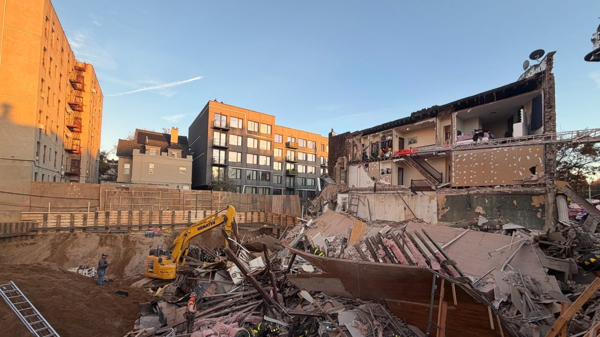
VIDEOPoder & SociedadDerrumbe de un edificio en Brooklyn deja dos muertos y 17 heridos
El colapso de un inmueble de tres plantas en Nueva York movilizó a 250 bomberos y rescatistas. El siniestro saca a la luz las fallas en la inspección del parque habitacional.
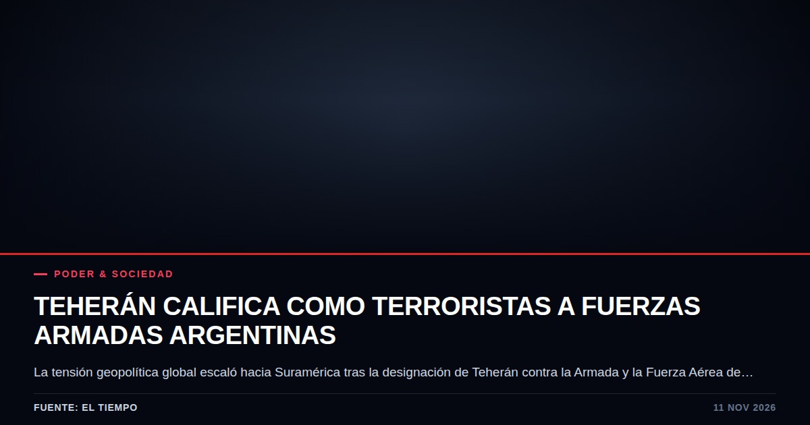
Poder & SociedadLa disputa global de Irán llega al Cono Sur: Teherán apunta contra las fuerzas armadas de Argentina
La escalada entre la República Islámica y el gobierno de Javier Milei traspasó la línea diplomática con una designación formal contra la Armada y la Fuerza Aérea argentinas.
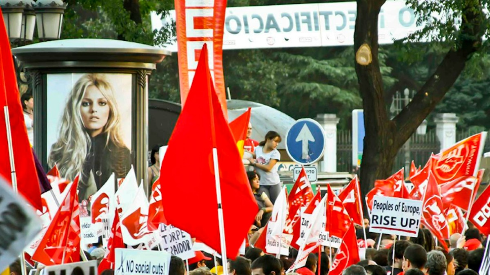
Poder & SociedadEl freno de emergencia: medio siglo de huelgas y poder sindical en España
Desde la disolución de las estructuras corporativas franquistas hasta la jornada de movilización tras catorce años de tregua, la huelga general ha operado como el verdadero regulador del modelo social español. Detrás de la narrativa oficial del diálogo reside una permanente disputa entre la competitividad exigida por Europa y la contención del malestar ciudadano.
 VIDEOPoder & Sociedad
VIDEOPoder & SociedadNoventa días de incertidumbre: el abandono institucional tras el terremoto en Colombia
A tres meses del sismo que sacudió el país, las autoridades locales denuncian la inacción gubernamental mientras las cifras oficiales revelan la magnitud de una crisis humanitaria desatendida.
La reorganización silenciosa de la estrategia migratoria en Estados Unidos
Tras los comicios de medio mandato de noviembre de 2026, la administración de Donald Trump ajusta la ejecución de sus medidas migratorias. El trasfondo revela una estrategia para sortear los contrapesos institucionales.
 VIDEOPoder & Sociedad
VIDEOPoder & SociedadLas conversaciones secretas en Abu Dabi y el verdadero trasfondo de la diplomacia en Ucrania
Rusia, Ucrania y Estados Unidos retoman las negociaciones en Emiratos Árabes Unidos a casi cinco años del inicio de la guerra, en un contexto marcado por la persistencia de los ataques y el escepticismo sobre resultados tangibles.

La batalla institucional en el Congreso de EE. UU. por la continuidad de Pete Hegseth
El Capitolio impulsa una ofensiva política contra el secretario de Guerra por las intervenciones en Irán, Yemen y Venezuela, desatando una pugna de poder con la Casa Blanca.
Las primeras lluvias invernales colapsan los refugios improvisados de desplazados en Gaza
El colapso de dunas por precipitaciones provocó la muerte de cinco personas en campamentos temporales. La falta de insumos de construcción expone la vulnerabilidad de la población ante el invierno.
La caída de Russell Brand: de la impunidad mediática a la condena judicial
El tribunal de Southwark en Londres sentenció al comediante y polemista a más de diez años de prisión por delitos sexuales cometidos en la década de 2000. El caso desnuda las fallas estructurales en la protección a víctimas frente a figuras influyentes.
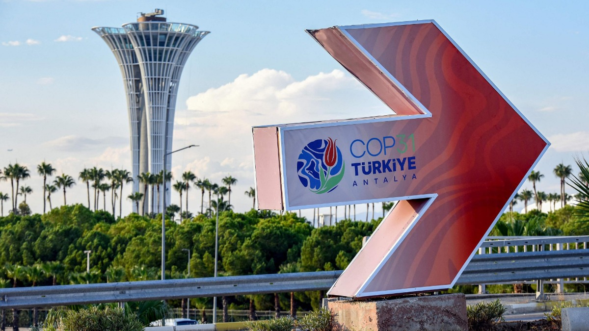
VIDEOPoder & SociedadLa cumbre COP31 en Antalya expone los límites del consenso climático multilateral
Cerca de 80 líderes mundiales debaten en Turquía un objetivo global de electrificación limpia. Detrás del esquema compartido con Australia, la ausencia de Estados Unidos y el veto cruzado amenazan con diluir los resultados.
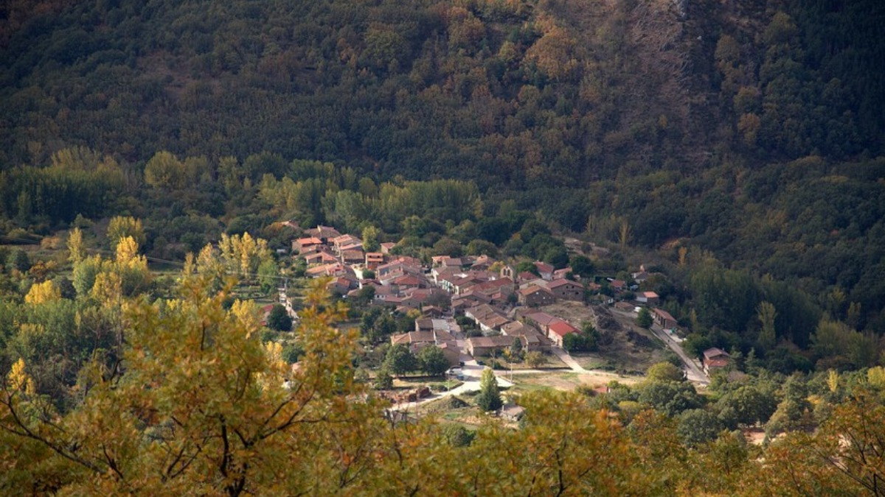
Poder & SociedadEl Cardoso de la Sierra expone las grietas del mapa autonómico
Una recogida de firmas para integrar un pueblo de Guadalajara en la Comunidad de Madrid evidencia las ineficiencias de las fronteras regionales. La dependencia absoluta de los servicios madrileños pone en duda la operatividad del modelo territorial.
La crisis climática fuerza una petición inédita de emergencia sanitaria mundial
Un nuevo informe respaldado por la OMS advierte sobre la aceleración letal del calentamiento global, cuyas consecuencias sanitarias y económicas superan los mecanismos actuales de respuesta internacional.
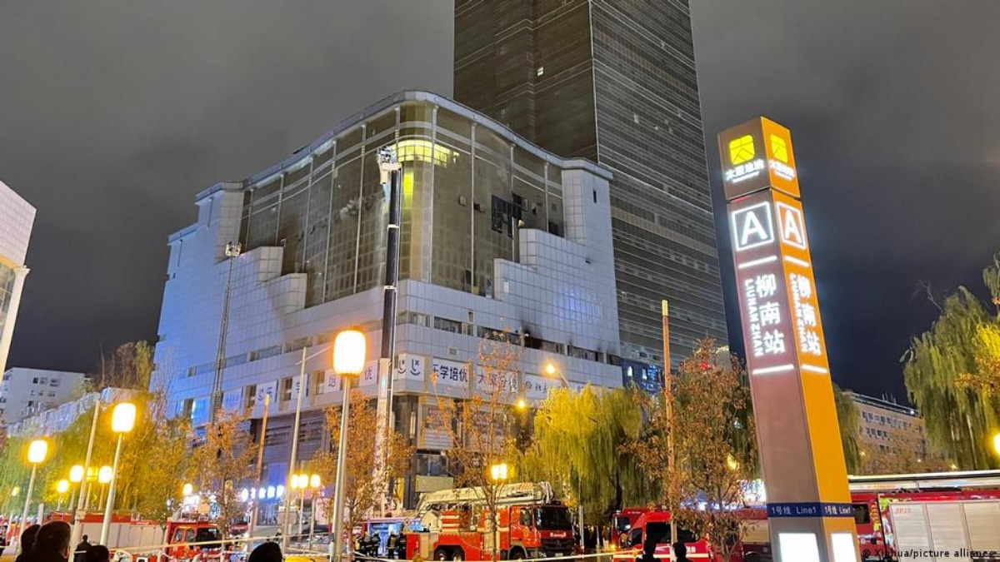
Poder & SociedadEl mortal incendio en Taiyuan reaviva la alarma sobre la seguridad residencial china
Un siniestro en un complejo de apartamentos en la capital de Shanxi provocó la muerte de al menos 14 personas. El hecho pone de manifiesto los vacíos persistentes en los controles de protección civil e infraestructura urbana.
Un juez ordena recluir al expresidente de Paraguay Santiago Peña en una base militar
La Justicia paraguaya dictó la prisión preventiva del exmandatario a la espera de su juicio, disponiendo su traslado a una unidad castrense. La medida pone en evidencia las grietas institucionales del sistema penitenciario civil.
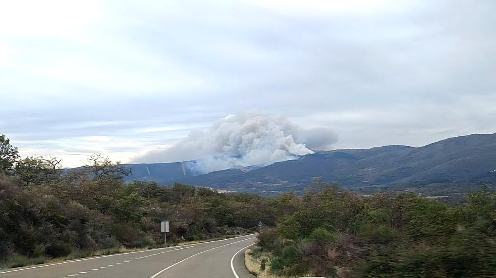
Poder & SociedadIncendio en Valverde del Fresno expone la fragilidad de la extinción en fronteras autonómicas
El despliegue de 49 efectivos en la Sierra de Gata logró contener las llamas entre Extremadura y Salamanca. Sin embargo, la propagación impulsada por el viento saca a la luz los vacíos de la gestión forestal compartida.
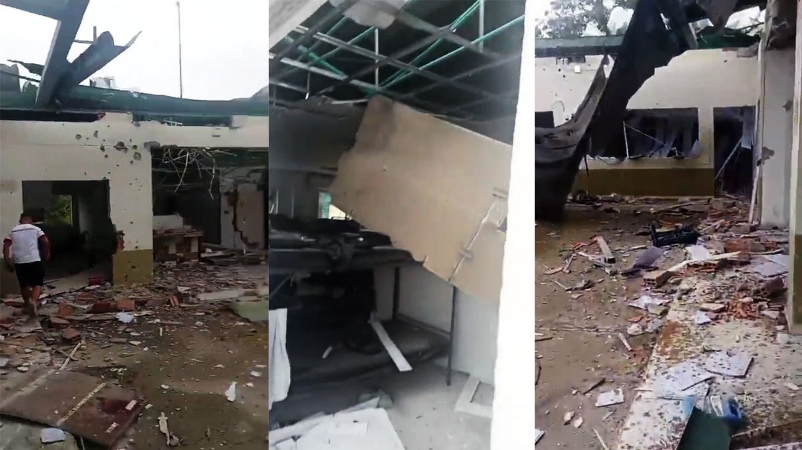
Poder & SociedadAtaque con drones en Santa Rosa del Sur expone la vulnerabilidad militar en Colombia
Un atentado con explosivos improvisados contra el Batallón 48 deja tres militares muertos y 16 heridos graves. El Gobierno atribuye el asalto al ELN mientras se recrudece la estrategia de seguridad.
El viraje agresivo de Trump en la Casa Blanca tras el revés electoral
El ofrecimiento de la portavocía al presidente de la UFC, Dana White, refleja la crisis de comunicación gubernamental tras la derrota republicana en las midterms. La salida de Susie Wiles y la llegada de Stephen Miller consolidan una estrategia de confrontación directa.
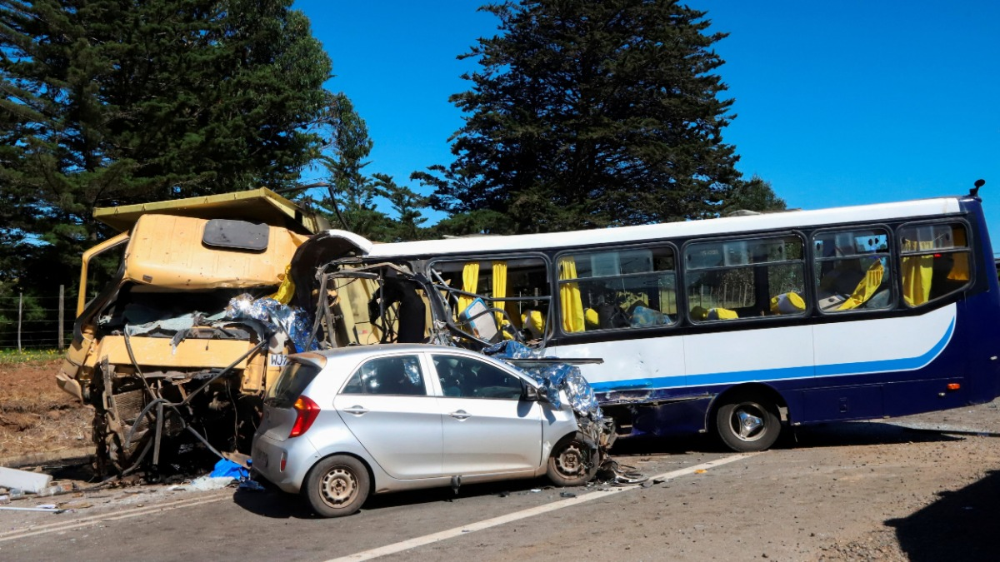
Poder & SociedadLa paradoja de la seguridad vial en la Ruta de la Fruta
Un accidente fatal en Valparaíso expone las carencias en la gestión de infraestructura crítica. La modernización de la ruta ha incrementado la velocidad, pero no la seguridad de los usuarios.
La caída de Santiago Peña y el reordenamiento de la élite en Paraguay
El juicio político contra Peña tras el colapso de Ueno Bank concluye con la jura de Pedro Alliana y una acusación fiscal en marcha.
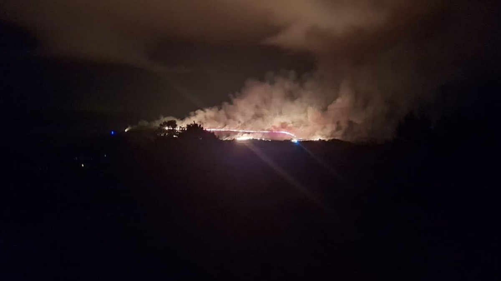
Poder & SociedadUn incendio en Manzaneda quema diez hectáreas y expone las grietas de la prevención invernal
Las brigadas contuvieron el fuego nocturno en la parroquia de Bidueira en medio de fuertes vientos. El suceso pone en evidencia la falta de ordenación territorial en periodos fuera de la campaña estival.
Donald Trump nombra a Stephen Miller jefe de gabinete tras el revés electoral
El arquitecto del programa de deportaciones masivas asumirá el cargo en reemplazo de Susie Wiles. La medida anticipa una fase de severa confrontación institucional con el Congreso entrante.
El despliegue de León XIV en Sudamérica y el pulso diplomático de la Santa Sede
El pontífice estadounidense inicia en Montevideo su gira más ambiciosa tras someterse a una cirugía pulmonar en octubre. Detrás de los 36 discursos se esconde un intento de la diplomacia vaticana por mantener peso político en una región polarizada.
Arrestan en Florida al padre de Meghan Markle por tenencia de material ilícito
Las autoridades estadounidenses abrieron un proceso penal centrado en delitos de abuso infantil. El caso reaviva el escrutinio mediático sobre la red familiar de la duquesa de Sussex.
El colapso del establishment en Los Ángeles entrega la alcaldía a la izquierda urbana
La victoria de Nithya Raman sobre Karen Bass consolida el triunfo de la planificación urbana crítica frente al aparato tradicional demócrata. Un giro empujado por la crisis de vivienda y las fallas estatales tras los incendios devastadores de 2025.
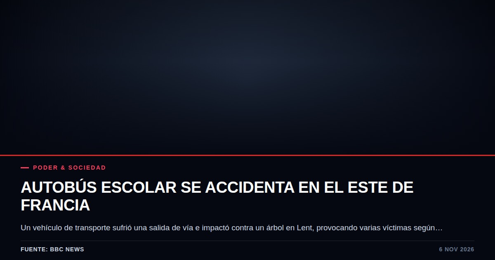
Poder & SociedadAccidente de autobús escolar en Lent expone fallas en transporte rural francés
Un vehículo de transporte escolar colisionó contra un árbol en el departamento de Ain. Las autoridades de Educación y Transporte se desplegaron mientras continúan las labores de emergencia.
Huelga general del 11N: por qué la calle y las urnas responden a lógicas totalmente distintas
La convocatoria conjunta de CC. OO. y UGT frente a la crisis de la vivienda revive el falso mito de que las movilizaciones masivas actúan como un predictor infalible de los resultados electorales.
El choque entre Milei y Sánchez en Madrid evidencia la parálisis del espacio iberoamericano
La XXX Cumbre Iberoamericana deja al descubierto la profunda brecha ideológica entre los gobiernos de la región. Frente al llamamiento de la Corona a la unidad, el foro refleja la imposibilidad de articular consensos estratégicos.
 VIDEOPoder & Sociedad
VIDEOPoder & SociedadEl dilema constitucional del nuevo Congreso para frenar la guerra de Trump en Irán
Los demócratas recuperan la mayoría en la Cámara de Representantes pero enfrentan barreras legales y políticas para detener la campaña armada contra Teherán. La llave del dinero se perfila como su única palanca real frente al veto presidencial.
La construcción cinematográfica de la memoria: el sesgo del canon histórico
Un panel de 85 historiadores convocado por Le Figaro analizó 183 películas para determinar las mejores obras del género. El resultado confirma la hegemonía de las producciones europeas y norteamericanas en la definición del pasado colectivo.
Tragedia en Columbia Británica: el ataque fatal que cuestiona la seguridad forestal canadiense
La muerte de Jenny Balcarras y Selah Reed en Bella Coola reabre la polémica sobre la gestión de grandes depredadores. Las autoridades investigan la participación de múltiples osos grizzly en el incidente.
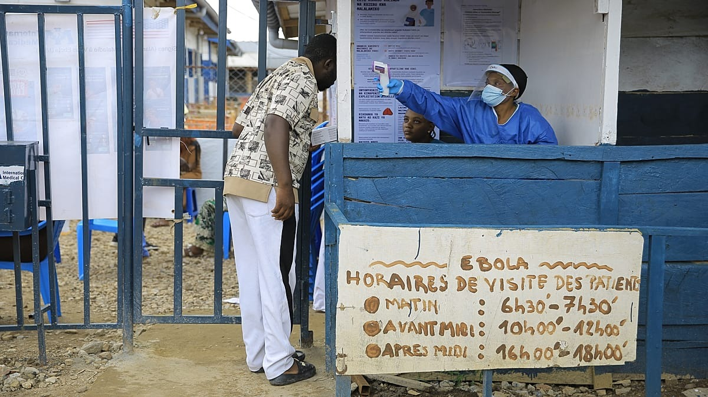
Poder & SociedadLa OMS acelera ensayos contra el ébola en medio de tensiones por el cierre de fronteras
La Organización Mundial de la Salud respalda dos nuevas vacunas para frenar la variante Bundibugyo en África, al tiempo que condena las restricciones de viaje que penalizan la transparencia de los países afectados.
 VIDEOPoder & Sociedad
VIDEOPoder & SociedadDonald Trump admite el costo político de la guerra en Irán tras la derrota republicana en el Congreso
El mandatario estadounidense justificó la intervención militar pese a perder el control legislativo en las elecciones intermedias. La fractura interna se profundiza con críticas directas del vicepresidente JD Vance.

Colombia ante el reto de negociar un nuevo préstamo con el Fondo Monetario Internacional en medio de la crisis fiscal
El Gobierno nacional busca financiamiento externo por hasta cinco mil millones de dólares, enfrentando la exigencia de reformas estructurales profundas bajo la supervisión del organismo multilateral.
El vuelco electoral en Washington bloquea la agenda legislativa de Donald Trump
La marea demócrata en las elecciones legislativas arrebata el control del Congreso a la Casa Blanca. Más allá de las lecturas de freno institucional, la capital estadounidense se encamina a un colapso operativo de carácter estructural.
Estados Unidos decide en las urnas el margen legislativo de Donald Trump
Millones de ciudadanos votan para renovar el Congreso en una jornada electoral decisiva. La contienda mide el contrapeso parlamentario a la agenda ejecutiva en Washington.
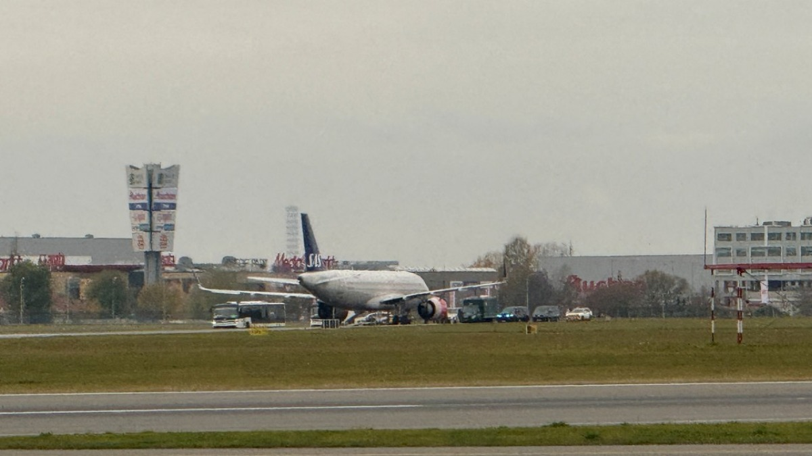
Poder & SociedadSabotajes y falsas alertas aéreas ponen a prueba la seguridad híbrida en Europa
Bruselas convoca a Europol tras una ofensiva coordinada contra supermercados y aeropuertos que desnuda las frágiles defensas digitales del continente.
El anuncio de Trump sobre la ayuda a Israel sacude los mercados en plena jornada electoral
El mandatario estadounidense aseguró haber acordado con Benjamin Netanyahu el cese de 4.000 millones de dólares anuales para Israel. La medida busca aplacar el descontento interno por la inflación, aunque su viabilidad jurídica sigue envuelta en dudas.
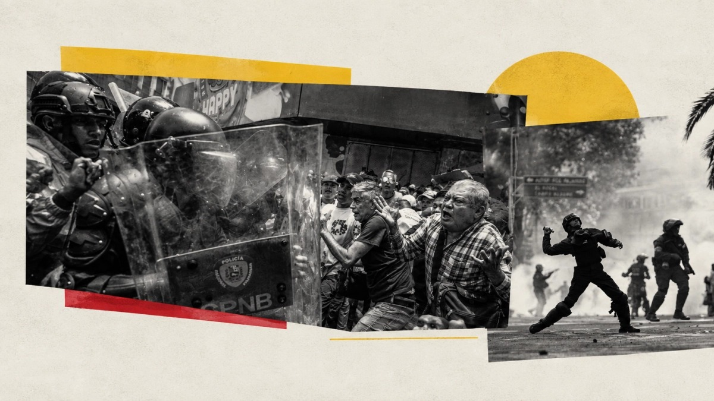
Poder & SociedadEl repunte del 489% en las protestas en Venezuela desafía el control represivo del régimen
El Observatorio Venezolano de Conflictividad Social registró un aumento masivo de movilizaciones en septiembre tras contabilizar 652 protestas en agosto. El deterioro extremo de los servicios públicos y los reclamos salariales sitúan a la gestión administrativa en el centro del descontento.
Karl Bushby concluye en Gran Bretaña una caminata global de 28 años
El exsoldado británico completó 80.477 kilómetros tras partir de Chile en 1998. La travesía expone la rigidez de los controles fronterizos continentales.
La crisis de la vivienda en Portugal desata una tormenta política tras la represión policial
La intervención contra acampadas pacíficas este fin de semana ha dejado decenas de heridos, avivando el descontento en el país de la Unión Europea donde más se ha encarecido la vivienda.